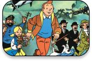
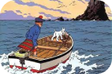
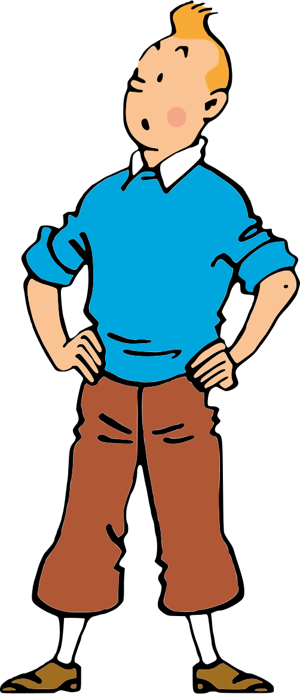
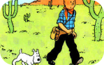

Origen y actualidad
Tintin comenzó en el año 1929, concretamente el día 10 de enero. En esta primera versión se publicó en un suplemento del diario belga "Le Petit Vingtieme". Ya desde el principio le acompaña Milu. Más adelante a partir del cuarto albúm también se le unieron "Hernández y Fernández" y ya en el noveno comic aparece ya el capitan Haddock. Hasta la fecha cuenta con 24 comics. Todos ellos muy entretenidos y con historias variadas.